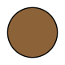

Kinesiske stjernetegn
Geden
Empatisk • Trofast • Entusiastisk
1955 • 1967 • 1979 • 1991 • 2003 • 2015 • 2027 • 2039
Rækkefølge

Position
Polaritet

Yin
Element

Jord
Lykkeblomst

Nellike
Lykkefarve
Brun
Lykketal

Syv
Geden er det ottende kinesiske stjernetegn.
Personer født i gedens år er ærlige, venlige og empatiske, oftest set som den mest uselviske person i deres vennekreds. De er medfølende og loyale, men kan blive hårdt såret af andres handlinger eller deres egen fiasko. De er kreative, passionerede og stolte, hvilket kan komme dem til gode i mange situationer.
Passer bedst med: Kanin, gris og hest.
Passer mindst med: Rotten og oksen.
Rækkefølge
Position
Polaritet
Yin
Element
Jord
Lykkeblomst
Nellike
Lykkefarve
Brun
Lykketal
Syv
Personlighed
Personer født i gedens år er trofaste og ærlige personer, oftest set som den mest empatiske stjernetegn. De værdsætter deres nærmeste venner og kommer dem til undsætning, hvis de har brug for hjælp. De er kærlige og uselviske, og tænker ofte på andre, selv hvis det ikke gør noget godt i sidste ende.
Geden opfattes som milde personer, men de skjuler ofte en stærk personlighed, som ikke er let at styre.
Styrker
Geden er kreativ og entusiastisk af natur, hvilket gør dem til ideelle entreprenører på mange områder. De har en iveren efter viden og bruger gerne tid og energi på at komme til bunds i det arbejde de er beskæftiget med.
Geden ses som introvert, men tag ikke fejl–de har en rig personlighed, som skinner frem når der er brug for det.
Svagheder
Geden er kendt som en people pleaser og er ivrige efter at gøre andre glade, selv hvis det går ud over dem selv. De forelsker sig nemt og kan nemt blive såret.
Geden kan være godtroende og har ikke nemt ved at gøre noget, der strider imod deres natur.